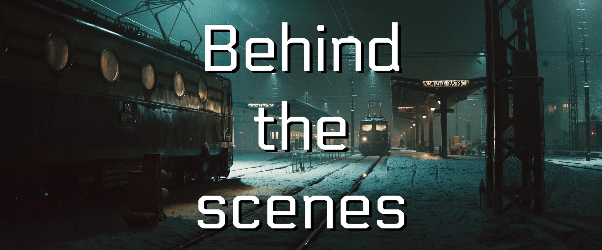

Marcel Haladej氏による、スロバキアのポヴァジュスカー・ビストリツァ駅を描いたCG作品のメイキング。9歳の頃からの構想と2005年の初挑戦を振り返りつつ、リファレンス写真や図面をもとにした最新版の制作を、モードボードからテクスチャリング、完成後の実地訪問まで解説している。
Marcel Haladej「Behind the scenes - Povazska Bystrica」（ArtStation）
https://www.artstation.com/artwork/EYV2D4
Marcel Haladej氏のArtStation
https://www.artstation.com/vsha